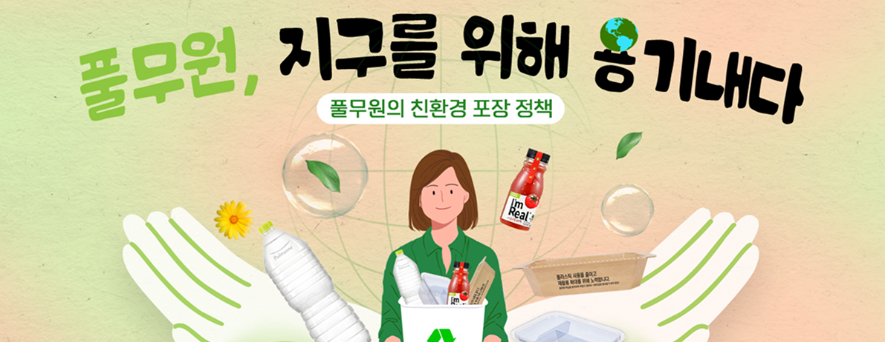
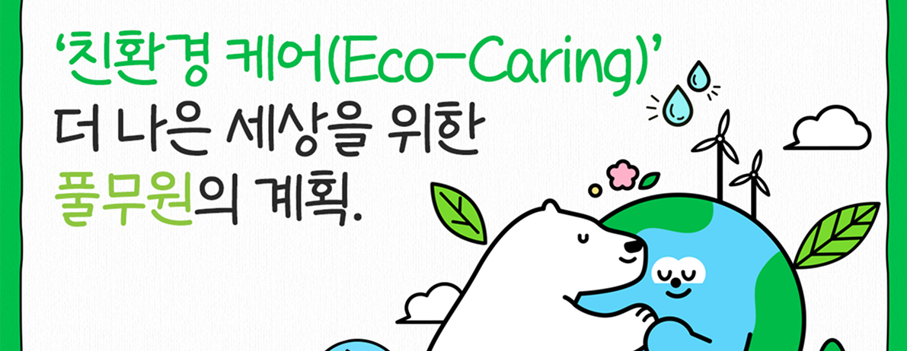

뉴스룸

기획자료
풀무원,
지구를 위해 용기내다
생산부터 배송까지 Supply-Chain 과정에서 플라스틱 줄이기 위한 노력 이어가 ‘플라스틱 절감, 자원 순환 강화, 파트너십 강화’ 통해 풀무원의 친환경 포장 정책 펼쳐 친환경 케어(Eco-Caring) 미션 하에 2035년까지 2022년 대비 플라스틱 사용량 20% 감축 목표
- 2024년 11월 11일

기획자료
‘친환경 케어’,
더 나은 세상을 위한
풀무원의 계획
탄소중립과 생물다양성 보존을 위한 풀무원의 친환경 케어(Eco-Caring) 전략 2035년까지 2022년 대비 온실가스 20%, 수자원 13%, 플라스틱 20% 감축 목표 풀무원 전사는 물론 주요 공급기업들과 적극적으로 협업, 친환경 케어 전략 확산 계획
- 2024년 2월 16일